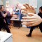

In the first quarter of 2010 I was a film reader for the 12th Encounters Documentary Film Festival. What this meant was, although I was …
Read more »From the blog
Text Animation
Experimenting with After Effects this weekend, I began with trying to animate the logo I designed for myself. Not entirely happy with the result and …
Read more »Shutter Island
I read Dennis Lehane’s ‘Shutter Island’ either towards the end of last year or earlier this year. As I neared the end of the thriller, …
Read more »The Science of Sleep
‘The Science of Sleep’ (2006) is Michel Gondry’s third feature film after ‘Human Nature’ and the popular ‘Eternal Sunshine of the Spotless Mind’. It stars …
Read more »Kentridge and Dumas in Conversation
I have just come from seeing ‘Kentridge & Dumas in Conversation’, a film by South African director and editor Catherine Meyburg. The film is showing …
Read more »